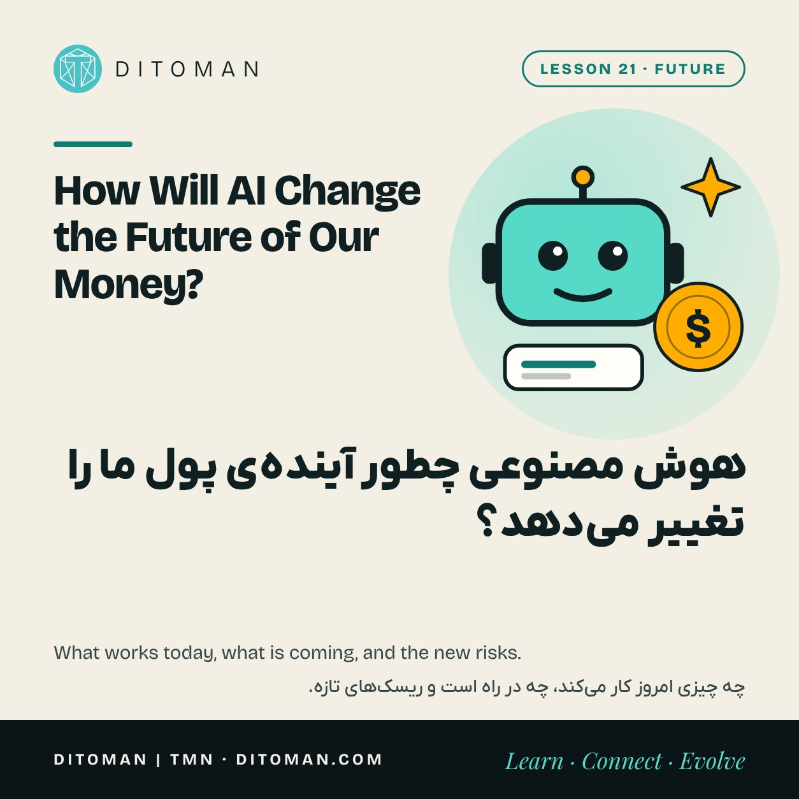

How Will AI Change the Future of Our Money?
كيف يغيّر الذكاء الاصطناعي مستقبل أموالنا؟
Artificial intelligence already decides whether your card payment looks suspicious, and it is starting to shop and pay on people's behalf. This lesson sorts what is real today from what is still a promise, and names the new risks clearly.
الذكاء الاصطناعي يقرّر الآن ما إذا كانت دفعتنا بالبطاقة مشبوهة أم لا، وبدأ شيئًا فشيئًا يشتري ويدفع بدلًا من البشر. هذا الدرس يفصل ما هو حقيقي اليوم عمّا لا يزال وعدًا، ويسمّي المخاطر الجديدة بوضوح.
Lesson Content
محتوى الدرس
Read the lesson in English or Persian.
اقرأ الدرس بالفارسية أو الإنجليزية.
Lesson 20 followed money from the branch to the app. The next step has already begun: from the app to an assistant that does things for you.
Artificial intelligence, or AI, is a broad name for software that learns patterns from data instead of following only fixed rules. It is worth looking at carefully, because around money the hopeful stories and the frightening ones are both partly true.
01. Where AI already works quietly
You have been using AI in finance for years without seeing it.
Fraud detection: when your bank answers the question from Lesson 14, a model compares the payment with millions of others in a fraction of a second. A purchase in an unusual place at an unusual hour gets blocked or checked.
Credit decisions: lenders use models to estimate who will repay, which is how a loan can be approved in a minute, as in Lesson 19.
Customer service: chat assistants answer routine questions at any hour.
These uses are mature. They make finance faster and cheaper, and they catch a great deal of fraud that people would miss.
02. What is new: assistants you can talk to
The newer AI systems understand ordinary language. That brings three things within reach of ordinary people.
Explaining: an assistant can explain a contract, a fee table or a financial term in plain words, in your own language.
Organising: it can sort a year of spending into categories and show where the money went.
Planning: it can lay out the options for a decision and the questions to ask.
This is real help, and for people who never had access to a financial adviser it is new.
03. What is arriving: AI that pays
The step now being built is an assistant that does not just advise, but acts: it finds the product, compares prices and pays.
Payment networks are preparing for this. Mastercard said its first payment made by an AI agent took place on its network in the third quarter of 2025, and it has been rolling out a service that registers and verifies such agents. Visa is building similar tools. Some crypto projects are designing payments between software agents using stablecoins.
For this to be safe, three things have to be clear in every payment: which person the agent acts for, what limits that person set, and who is responsible when it buys the wrong thing. Those rules are still being written.
| Stage | What it does | Where it stands | Your part |
|---|---|---|---|
| In the background | Spots fraud, scores loans | Mature, used for years | Ask why a decision was made |
| Assistant | Explains, organises, plans | Available now | Check the important facts |
| Agent | Shops and pays for you | Arriving; rules being written | Set limits and review |
04. The new risks
Convincing fakes: the same technology produces cloned voices and faces. In 2024 an employee of the engineering firm Arup in Hong Kong sent about 25 million dollars after a video call in which every other participant was a fake. Lesson 17 showed how fast impersonation scams are growing.
Confident mistakes: a language model can state something false in a calm, fluent voice. It may invent a number, a rule or a source. With money, an error that sounds right is more dangerous than one that sounds wrong.
Hidden unfairness: a model trained on past decisions can repeat past bias, refusing people for reasons nobody can explain to them.
Privacy: an assistant is only as helpful as the data you give it. Bank statements, balances and identity documents are exactly what a criminal wants too.
05. Using AI well with money
Treat an assistant as a well-read helper, not as an authority.
Ask it to explain, then check the important facts against the original contract, the official site or a person who is accountable.
Never paste secrets: no recovery phrase, no card number, no one-time code. Lesson 13's rule has no exception for machines.
Agree a family code word for urgent money requests by phone or video. A cloned voice does not know it.
Keep the final decision yours. If an assistant can spend, give it a small limit and review what it did.
06. Where this may go
If the pieces come together, the picture is a hopeful one: an assistant that watches for a better rate, warns you before a fee, catches a scam before you answer it and explains every step in your own language. Good financial help, which used to belong to the wealthy, could become ordinary.
Getting there depends less on cleverer models than on clear rules, honest design and people who understand what the tools can and cannot do. That last part is what these lessons are for.
What to take from this
AI has worked in the background of finance for years, mainly against fraud and in lending.
New assistants explain and organise well. They can also be confidently wrong.
AI that pays for you is arriving, and the rules of responsibility are still being written.
The same tools power better scams. Verify urgent requests through a second channel.
Use AI to understand. Keep secrets and final decisions to yourself.
تتبّع الدرس 20 المال من الفرع إلى التطبيق. والخطوة التالية بدأت أيضًا: من التطبيق إلى مساعد ينجز الأعمال نيابةً عنا.
الذكاء الاصطناعي اسم عام لبرمجيات تتعلم الأنماط من البيانات بدل اتباع قواعد ثابتة. ويستحق أن ننظر إليه بدقة، لأن الروايتين، المبشّرة والمخيفة، صحيحتان إلى حد ما في شأن المال.
01. أماكن يعمل فيها الذكاء الاصطناعي بصمت منذ الآن
نستخدم الذكاء الاصطناعي في الشؤون المالية منذ سنوات دون أن نراه.
كشف الاحتيال: حين يجيب بنكنا عن سؤال الدرس 14، يقارن نموذج في جزء من الثانية تلك الدفعة بملايين الدفعات الأخرى. والشراء في مكان غير معتاد وساعة غير معتادة يُحجب أو يُراجَع.
القرار الائتماني: يقدّر المقرضون بنماذج من سيسدد القرض. ولهذا يمكن أن يُعتمد القرض في دقيقة؛ وهو الدرس 19 نفسه.
خدمة العملاء: مساعدات المحادثة تجيب في أي ساعة عن الأسئلة المعتادة.
هذه الاستخدامات راسخة. تجعل المال أسرع وأرخص وتمنع قدرًا كبيرًا من الاحتيال الذي يفلت من عيون البشر.
02. الجديد: مساعد يمكن التحدث إليه
الأنظمة الأحدث تفهم اللغة العادية. وهذا يضع ثلاثة أشياء في متناول الناس العاديين.
الشرح: يستطيع المساعد شرح عقد أو جدول رسوم أو مصطلح مالي بلغة بسيطة وبلغتنا.
الترتيب: يستطيع تصنيف نفقات سنة ويبيّن أين ذهب المال.
التخطيط: يستطيع وضع خيارات قرار والأسئلة التي يجب طرحها جنبًا إلى جنب.
هذه مساعدة حقيقية، وهي جديدة لمن لم يصل قط إلى مستشار مالي.
03. القادم: ذكاء اصطناعي يدفع
الخطوة التي تُبنى الآن مساعد لا ينصح فقط بل يتصرف بنفسه: يجد السلعة ويقارن الأسعار ويدفع.
وتجهّز شبكات الدفع نفسها لهذا. قالت ماستركارد إن أول دفعة أجراها وكيل ذكاء اصطناعي سُجلت في الربع الثالث من 2025 على شبكتها، وأطلقت خدمة تسجّل هؤلاء الوكلاء وتعتمدهم. وتبني فيزا أدوات مشابهة. وبعض مشاريع الكريبتو تصمم أيضًا الدفع بين الوكلاء البرمجيين بالعملات المستقرة.
ولكي يكون هذا آمنًا يجب أن تتضح في كل دفعة ثلاثة أمور: لمن يتصرف الوكيل نيابةً عنه، وما السقف الذي وضعه ذلك الشخص، ومن المسؤول إن اشترى شيئًا خاطئًا. وهذه القواعد ما زالت تُكتب.
| المرحلة | ماذا يفعل | حالته | دورنا |
|---|---|---|---|
| في الخلفية | يمسك الاحتيال ويقيّم القرض | راسخ، يعمل منذ سنوات | اسأل لماذا اتُّخذ القرار |
| المساعد | يشرح ويرتّب ويخطط | متاح الآن | افحص النقاط المهمة |
| الوكيل | يشتري ويدفع نيابةً عنا | قادم؛ قواعده تُكتب | ضع سقفًا وراجع |
04. مخاطر جديدة
التزييف المقنع: هذه التقنية نفسها تصنع صوتًا ووجهًا مزيفين. ففي 2024 حوّل موظف في شركة الهندسة «أروب» في هونغ كونغ نحو 25 مليون دولار بعد مكالمة فيديو كان كل المشاركين الآخرين فيها مزيفين. وبيّن الدرس 17 مدى سرعة نمو الاحتيال بانتحال الهوية.
الخطأ بثقة: قد يقول نموذج لغوي شيئًا خاطئًا بنبرة هادئة سلسة. وقد يختلق رقمًا أو قاعدة أو مصدرًا. وفي المال، الخطأ الذي يبدو صحيحًا أخطر من الخطأ الذي يبدو خاطئًا.
ظلم خفي: النموذج الذي تعلم من قرارات الماضي قد يكرر انحياز الماضي ويرفض الناس لأسباب لا يستطيع أحد شرحها.
الخصوصية: المساعد يساعد بقدر ما نعطيه من بيانات. وكشف الحساب المصرفي والرصيد ووثائق الهوية هي بالضبط ما يريده المحتال أيضًا.
05. الاستخدام الصحيح للذكاء الاصطناعي في المال
عامل المساعد كرفيق واسع الاطلاع، لا كمرجع.
اطلب منه أن يشرح ثم افحص النقاط المهمة؛ مع نص العقد الأصلي أو الموقع الرسمي أو شخص مسؤول.
لا تُدخل أي سر: لا عبارة الاسترداد ولا رقم البطاقة ولا كلمة مرور لمرة واحدة. وقاعدة الدرس 13 لا تستثني الآلات أيضًا.
ضع كلمة سر في الأسرة لطلبات المال العاجلة في مكالمة هاتفية أو بالفيديو. الصوت المزيف لا يعرفها.
اتخذ القرار النهائي بنفسك. إن كان المساعد يستطيع الإنفاق فضع له سقفًا صغيرًا وراجع أعماله.
06. إلى أين يتجه هذا المسار
إن اجتمعت القطع فالصورة مبشّرة: مساعد يبحث عن سعر أفضل، ويحذّر قبل رسم، ويمسك الاحتيال قبل أن نرد عليه، ويشرح كل خطوة بلغتنا. والمساعدة المالية الجيدة، التي كانت يومًا متاحة للأثرياء فقط، قد تصبح عادية.
والوصول إلى هناك يتوقف أقل على نماذج أذكى وأكثر على قواعد واضحة وتصميم صادق وناس يعرفون ما تستطيع هذه الأدوات وما لا تستطيع. ولهذا وُجدت هذه الدروس في هذا القسم الأخير.
ماذا نستنتج
يعمل الذكاء الاصطناعي في خلفية الشؤون المالية منذ سنوات؛ أكثره لمكافحة الاحتيال وفي الإقراض.
المساعدات الجديدة تشرح وترتّب جيدًا. وقد تخطئ أيضًا بثقة.
الذكاء الاصطناعي الذي يدفع نيابةً عنا قادم وقواعد مسؤوليته ما زالت تُكتب.
هذه الأدوات نفسها جعلت الاحتيال أقوى أيضًا. تحقق من الطلب العاجل عبر طريق ثانٍ.
استخدم الذكاء الاصطناعي لتفهم. وأبقِ الأسرار والقرار النهائي عندك.
Two stories from the site
روايتان من هذا الموقع نفسه
Lesson 17 covers the scam patterns that AI is now making more convincing. Lesson 20 explains the move from branches to apps that came before this step.
يراجع الدرس 17 أنماط الاحتيال التي جعلها الذكاء الاصطناعي الآن أكثر إقناعًا. ويشرح الدرس 20 الانتقال من الفرع إلى التطبيق الذي سبق هذه الخطوة.
Key Concepts
المفاهيم الأساسية
- Artificial intelligence
- Machine learning model
- Fraud detection
- Credit scoring
- Language assistant
- AI agent
- Agentic payments
- Deepfake
- Confident error (hallucination)
- Second-channel verification
- الذكاء الاصطناعي
- نموذج التعلم الآلي
- كشف الاحتيال
- التصنيف الائتماني
- مساعد لغوي
- وكيل ذكاء اصطناعي
- الدفع بيد وكيل
- التزييف العميق
- الخطأ بثقة
- التحقق عبر طريق ثانٍ
Learning Objectives
أهداف التعلّم
- Name three places where AI already works in finance.
- Say what a language assistant does well and where it can fail.
- Explain what an AI agent that pays is, and which three things must be clear.
- List the four new risks.
- Describe safe habits for using AI with money.
- سمِّ ثلاثة أماكن يعمل فيها الذكاء الاصطناعي منذ الآن في الشؤون المالية.
- قل ما الذي يجيده المساعد اللغوي وأين قد يخطئ.
- اشرح ما وكيل الذكاء الاصطناعي الدافع وما الأمور الثلاثة التي يجب أن تتضح.
- عدّد المخاطر الأربع الجديدة.
- اشرح العادات الآمنة لاستخدام الذكاء الاصطناعي في المال.
Quiz
اختبار قصير
Check what stayed with you. The answer is under each question.
انظر ماذا علق في ذهنك. الإجابة تحت كل سؤال.
Question 1
السؤال 1
Where has AI worked in finance for years?
أين يعمل الذكاء الاصطناعي منذ سنوات في الشؤون المالية؟
A. Fraud detection on card payments
أ. كشف الاحتيال في الدفع بالبطاقة
B. Printing banknotes
ب. طباعة الأوراق النقدية
C. Setting central bank interest rates
ج. تحديد سعر فائدة البنك المركزي
Correct answer: A
الإجابة الصحيحة: أ
Question 2
السؤال 2
What is the main danger of a language assistant's mistakes?
ما الخطر الرئيسي في أخطاء المساعد اللغوي؟
A. They are always obvious
أ. هي دائمًا ظاهرة
B. They can sound confident and correct
ب. قد تبدو واثقة وصحيحة
C. They only happen in English
ج. تحدث بالإنجليزية فقط
Correct answer: B
الإجابة الصحيحة: ب
Question 3
السؤال 3
For an AI agent to pay safely, what must be clear?
لكي يدفع وكيل الذكاء الاصطناعي بأمان، ما الذي يجب أن يتضح؟
A. The colour of the app
أ. لون التطبيق
B. Who it acts for, its limits, and who is responsible
ب. لمن يتصرف وما سقفه ومن المسؤول
C. How many languages it speaks
ج. كم لغة يعرف
Correct answer: B
الإجابة الصحيحة: ب
Question 4
السؤال 4
A relative calls by video asking for money urgently. What is the safest step?
يطلب أحد الأقارب مالًا في مكالمة فيديو عاجلة. ما أأمن تصرف؟
A. Send it at once
أ. أرسل فورًا
B. Ask the assistant if the face looks real
ب. اسأل المساعد هل الوجه حقيقي
C. Verify through a second channel or a family code word
ج. تحقق عبر طريق ثانٍ أو بكلمة السر العائلية
Correct answer: C
الإجابة الصحيحة: ج
Question 5
السؤال 5
What should never be pasted into an AI assistant?
ما الذي يجب ألا يُدخل أبدًا في مساعد ذكاء اصطناعي؟
A. A recovery phrase or one-time code
أ. عبارة الاسترداد أو كلمة مرور لمرة واحدة
B. A question about inflation
ب. سؤال عن التضخم
C. A financial term you want explained
ج. مصطلح مالي تريد شرحه
Correct answer: A
الإجابة الصحيحة: أ
Sources
المصادر
- Digital Commerce 360: Mastercard's first agentic transaction and Agent Pay rollout (31 October 2025)
- Decrypt: AI and impersonation in 2025 crypto scams, Chainalysis
- Fortune: Arup confirmed as victim of the 25 million dollar deepfake fraud in Hong Kong (17 May 2024)
- Bank for International Settlements, Annual Report 2024: Artificial intelligence and the economy
This field changes quickly. Product names and rollout dates are as reported in the sources and may have moved on.
هذا المجال يتغير بسرعة. أسماء المنتجات والتواريخ كما وردت في المصادر وقد تكون تغيرت.
نتابع معًاFollow along
New lessons are announced first on Ditoman's channels.
تُعرَض الدروس الجديدة أولًا على قنوات ديتومان.